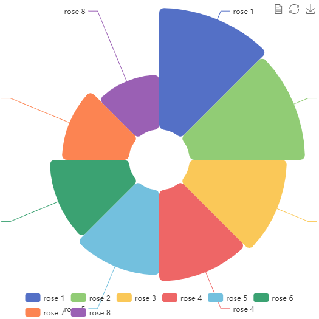

This package is a thin R wrapper around Javascript library ECharts.
One major command(ec.init) uses R lists to support the ECharts API.
Benefit from ECharts full functionality and build interactive charts in R and Shiny with minimal overhead.
Wider connectivity and deployment potential through WebR and crosstalk.
Compare to echarts4r üìå
| R package | echarts4r | echarty |
|---|---|---|
| initial commit | Mar 12, 2018 | Feb 5, 2021 |
| library size |  |
 |
| test coverage |

|
|
| lines of code | 1,202,623
|
5,517
|
| API design (1) | own commands with parameters | mostly ECharts option lists |
| number of commands | over 200 | one command + optional utility commands |
| dataset support | no | yes |
| WebR support | no | yes |
| crosstalk support | no | yes |
| dependencies (packrat) | 65 | 40 |
| dependencies (WebR) | 188 | 46 |
| utilities | bezier, correlations, histogram, density, loess, flip, nesting, more | extended boxplots, tabsets, layouts, shapefiles, lotties, more |
(1) We encourage users to follow the original ECharts API to construct charts with echarty. This differs from echarts4r which uses own commands for most chart options.
Comparison review done Feb 2024 for current versions of echarts4R and echarty. ___Please consider granting a Github star ⭐ to show your support.
Installation
Latest development build 1.6.5
if (!requireNamespace('remotes')) install.packages('remotes')
remotes::install_github('helgasoft/echarty') From CRAN:
install.packages('echarty')Examples
library(echarty); library(dplyr)
# scatter chart (default)
cars |> ec.init()
# parallel chart
ToothGrowth |> ec.init(ctype= 'parallel')
# 3D chart with GL plugin
iris |> group_by(Species) |> ec.init(load= '3D')
# timeline of two series with grouping, formatting, autoPlay
iris |> group_by(Species) |>
ec.init(
timeline= list(autoPlay= TRUE),
series.param = list(
symbolSize= ec.clmn('Petal.Width', scale= 9),
encode= list(x= 'Sepal.Width', y='Petal.Length'),
markLine= list(data= list(list(type='max'), list(type='min')))
)
)
# show a remote map chart, needs package leaflet installed
echarty::ec.fromJson('https://helgasoft.github.io/echarty/test/pfull.json')Get started
The Coder is a good introduction, type library(echarty); demo(coder).
The WEBSITE has a vast gallery with code and tutorials.
The package itself has code examples included. Now you can start building beautiful ECharts with R and Shiny!




Made with echarty. Powered by ECharts.